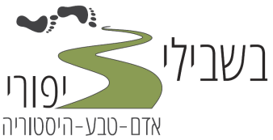

<div>
    <div>
        <div>
            <div>
              <div>
                <!DOCTYPE html>
                <html lang="en">
                <head>
                    <meta charset="UTF-8">
                    <meta name="viewport" content="width=device-width, initial-scale=1.0">
                    <title>בשבילי ציפורי: אדם-טבע-היסטוריה</title>
                    <style>
                        body {
                            font-family: Arial, sans-serif;
                            margin: 0;
                            padding: 0;
                        }
                        header {
                            background-color: #0a612b;
                            color: #fff;
                            padding: 20px;
                            text-align: center;
                        }
                        .container {
                            max-width: 800px;
                            margin: 0 auto;
                            padding: 20px;
                        }
                        .instructions {
                            background-color: #f0f0f0;
                            padding: 20px;
                            border: 1px solid #ccc;
                            border-radius: 5px;
                        }
                        .legend {
                            background-color: #b6b1b1;
                            padding: 20px;
                            border: 1px solid #ccc;
                            border-radius: 5px;
                        }
                        iframe {
                            width: 100%;
                            height: 500px; /* Adjust the height as needed */
                            border: none;
                        }
                        .language-select {
                            text-align: center;
                            margin-top: 20px;
                        }
                    </style>
                </head>
                <body>
                    <header>
                        <div class="header-content">
                            
            
                            <div class="header-text language-text" lang="he" dir="rtl"  style="display: block;">
                                <h2>"ששה עשר מיל חיזור חיזור לציפורי הן הן ארץ זבת חלב ודבש"</h2>
                                <h4>(ירושלמי, ביכורים ו&#39; ע&quot;א)</h4>
                            </div>
                            <!-- <div class="header-text language-text" lang="en" style="display: none;">
                                <h2>"Sixteen mil in a circle around Sepphoris is the Land flowing with milk and honey"</h2>
                                <h4>(Jerusalem Talmud Bikkurim 1:8)</h4>
                            </div>
                            <div class="header-text language-text" lang="ar" dir="rtl"  style="display: none;">
                                <h2>"ستة عشر مليونًا في دائرة حول صفوريس هي الأرض التي تفيض لبنًا وعسلًا"</h2>
                                <h4>(التلمود اليروشلمي)</h4>
                            </div> -->
                        </div>
                    </header>
                    <div class="container">
                        <!-- <div class="language-select">
                            <label for="language-select">Select Language:</label>
                            <select id="language-select">
                                <option value="he">🇮🇱 עברית (Hebrew)</option>
                                <option value="en">🇺🇸 English</option>
                                <option value="ar">🇵🇸 العربية  (Arabic)</option>
                            </select>
                        </div> -->
                        <div class="instructions language-text" lang="he" dir="rtl"  style="display: block;">
                            <!-- <h2 id="instructions-title-he">הוראות:</h2> -->
                            <p>
                                שלום,
                            </p>
                            <p>
                                מוזמנים להשתמש במפה לתכנון בבית של טיול במרחב ציפורי ולהשתמש במפה בשטח לניווט ולקבלת מידע על השבילים והאתרים בהם תבקרו.
                            </p>
                           <p style="font-size: 24px;">
                                <b>
                                    לפתיחת המפה
                                    <a href="https://www.google.com/maps/d/edit?mid=1kRxdM_ZtROdO2yqKVaQOj7ESsiuNddk&usp=sharing" target="_blank">לחץ כאן</a>.
                                </b>
                            </p>
                            <p>
                                אנו מקווים שהשימוש במפה זו יתרום להיכרות עם המרחב סביבנו ולהנאה ממנו. נקווה שעם ההיכרות תבוא גם הוקרה למרחב הפתוח, לשימור ופיתוח הטבע, הנוף והמורשת האנושית העשירה בו.
                            </p>
                            <p>
                                המפה כוללת שבילים ונקודות עניין וכן מידע על השבילים ונקודות העניין. מידע זה בא כטקסט, תמונה, ו/או קישור לדף מרשתת.
                            </p>
                  
                            <h3>
                                שימוש במפה:
                            </h3>
                            <p>
                                ניתן להשתמש במפה בכל מחשב, טאבלט וטלפון חכם שיש בהם התקנה של Google Maps (מותקן מראש ברוב המכשירים).
                            </p>
                            <p>
                                האפליקציה בה מוצגת המפה היא ואריציה של Google maps. נקראת my maps. 
                            </p>
                            <p>
                                השימוש בה דומה מאוד לשימוש ב- Google maps. ההבדלים נובעים מכך שאי אפשר לבצע פעולות מסויימות על השבילים ונקודות העניין הפרטיים.
                            </p>
                            <p>
                                <b>תצוגה התחלתית:</b> עם פתיחת המפה תראו מקבץ של אייקונים ושל תוואי שבילים בצבעים שונים. ראשית לכל אנא בצעו zoom in , כך שתוכלו להבחין בפרטים השונים.
                            </p>
                            <p>
                                יש לשים לב: אנו רואים הן את הפריטים (שבילים ונקודות עניין) הפרטיים והן את הפריטים השייכים למפת Google Maps.
                            </p>
                            <ul>
                                <li>
                                    <b>שינוי רקע:</b> ניתן לשנות את מפת הרקע לכל אחת מהאפשרויות הקיימות (בנייד, באמצעות הכפתור ).
                                </li>
                                <li>
                                    <b>חלון מידע:</b> חלון המידע עבור האלמנטים הפרטיים כולל פחות מידע מאשר עבור האלמנטים שלGoogle maps.
                                </li>
                                <li>
                                    <b>ניווט:</b> 
                                    <ol>
                                        <li>
                                            תכנן את המסלול בעצמך (האפליקציה לא מכירה את רוב השבילים המובילים לנקודות העניין ולכן לא תספק מסלול מומלץ או שתספק מסלול לא אופטימלי).
                                        </li>
                                        <li>
                                            צעד במסלול שבחרת תוך שאתה מוודא שהסמן המציין את מיקומך נמצא במסלול הדרוש.
                                        </li>

                                    </ol>
                                </li>
                            </ul>
                        </div>
                        <div class="legend language-text" lang="he" dir="rtl"  style="display: block;">
                            <h3>
                                מקרא דרכים, שבילים ונחל:
                            </h3>
                            <ul>
                                <li>
                                    <p>מקרא דרכים, שבילים ונחל:</p>
                                    <p>במפה הדיגיטלית, שבילים אלה מסומנים בצבעים שונים – ראה מקרא במפה.</p>
                                </li>
                                <li>
                                    <p>דרכים לא מסומנות (דרכים רחבות, קיימות בשטח אך אינן מסומנות בו):</p>
                                    <p>במפה הדיגיטלית מסומנות דרכים אלה בקו <span style="color: red;">אדום ----------</span></p>
                                    
                                </li>
                                <li>
                                    <p>שבילים לנקודות עניין (דרכים או שבילים קצרים המובילים מדרך ראשית אל נקודת העניין):</p>
                                    <p>במפה הדיגיטלית מסומנות דרכים אלה בקו <span style="color: yellow;">צהוב ----------</span></p>
                                    
                                </li>
                            </ul>
                            <h3>
                                מקרא נקודות עניין:
                            </h3>
                            <p>
                                כל נקודות העניין הפרטיות מופיעות כאייקון עגול. למשל:  (לעומת זאת, נקודות העניין המקוריות של מפת Google Maps מופיעות בצורה של טיפה. למשל ).
                            </p>
                            <h3>
                                תמיכה:
                            </h3>
                            <p>
                                בכל שאלה, הארה והערה, מוזמנים לפנות בווטסאפ אל צביקה סגל 050-7208710.
                            </p>
                            <h3>
                                תודות:
                            </h3>
                            <p>
                                אנשים רבים תרמו ליצירת המפה: אריאדנה שוקרון (רשות העתיקות), טל רטנר וניר פפאי (רשות ניקוז קישון), רחל אשכול (רט"ג), שלגית היימן וניר רכס (קק"ל), איתמר לפיד (ינבוע), שירן חביבי (מומחית GIS),ערן סגל (תכנת), נמרוד קריגר, רותי הר אל וצביקה סגל (בשבילי ציפורי).
                            </p>
                            
                        </div>
                        <!-- <div class="instructions language-text" lang="en" style="display: none;">
                          <h2 id="instructions-title">Instructions:</h2>
                          <p>
                            This page will include information on the options for using the map and instructions for using it.
                          </p>
                      </div>
                      <div class="instructions language-text" lang="ar" dir="rtl" style="display: none;">
                          <h2 id="instructions-title-ar">التعليمات:</h2>
                          <p>
                            ستتضمن هذه الصفحة معلومات حول خيارات استخدام الخريطة وتعليمات استخدامها.
                          </p>
                      </div> -->
                        <iframe src="https://www.google.com/maps/d/embed?mid=1zcCHp-AW1gT8zBYxJykJI16iZwiluKM&ehbc=2E312F" width="640" height="480" frameborder="0"></iframe>
                    </div>
                
            <!-- JavaScript placed at the end of the document -->
            <script>
                document.addEventListener('DOMContentLoaded', function () {
                    const languageSelect = document.getElementById('language-select');
                    const languageText = document.querySelectorAll('.language-text');
                    // const instructions = document.querySelectorAll('.instructions');
            
                    languageSelect.addEventListener('change', function () {
                        const selectedLanguage = this.value;
                        
                        languageText.forEach(lanText => {
                            const lang = lanText.getAttribute('lang');
                            if (lang === selectedLanguage) {
                                lanText.style.display = 'block';
                            } else {
                                lanText.style.display = 'none';
                            }
                        });
                        // instructions.forEach(instruction => {
                        //     const lang = instruction.getAttribute('lang');
                        //     if (lang === selectedLanguage) {
                        //         instruction.style.display = 'block';
                        //     } else {
                        //         instruction.style.display = 'none';
                        //     }
                        // });
                    });
                });
            </script>
                </body>
                </html>
                
              </div>
            </div>
        </div>
    </div>
</div>
